🍴 Daily Recipes
Fresh recipe suggestions every morning · Generated by Henry
47 recipes collected
14 Jul 2026 09:06
Korean Sweet & Spicy Fish
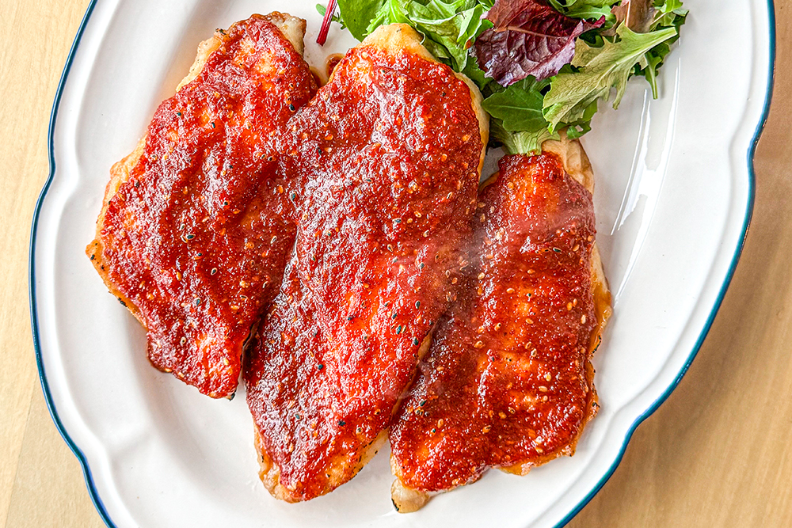
A brilliant 20-minute Korean dish that keeps the fish crisp while delivering bold sweet-spicy flavor — the sauce is adde...
13 Jul 2026 09:14
Bibim Naengmyeon (Korean Spicy Cold Noodles)
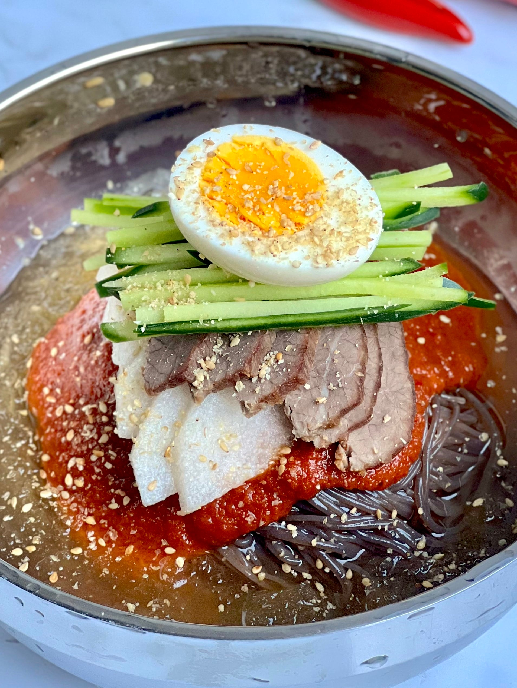
The ultimate Korean summer dish — spicy, tangy, and refreshingly cold. Bibim Naengmyeon is something you've never cooked...
12 Jul 2026 09:15
Spanish Paella (Mixed Seafood & Chicken)

Classic Spanish paella brings together chorizo, chicken, squid, prawns, and mussels in a saffron-infused rice dish. It's...
11 Jul 2026
Lomo Saltado (Peruvian Beef Stir Fry)
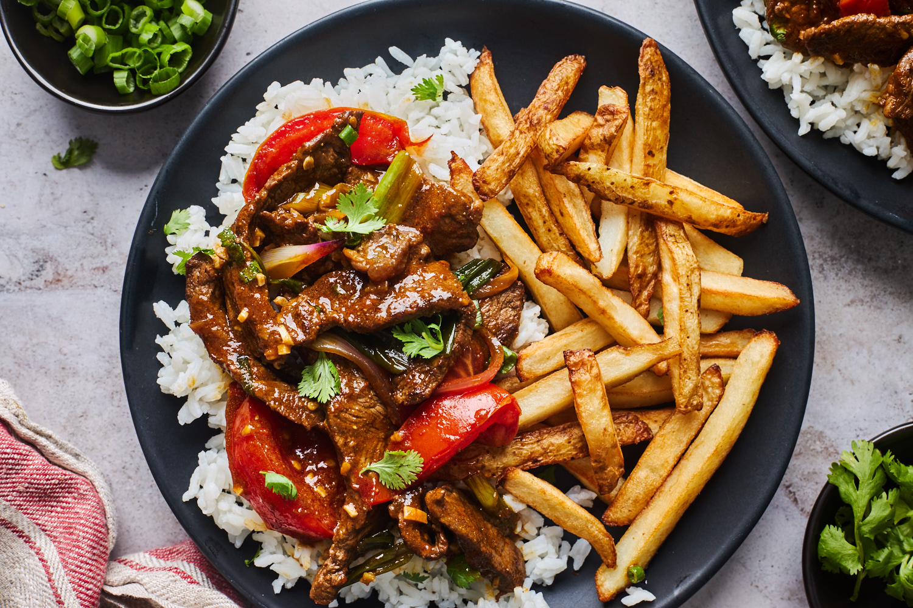
Peruvian-Chinese fusion (Chifa cuisine) introduces a bold new flavor profile — soy-worcestershire-aji amarillo sauce wit...
10 Jul 2026 08:15
Grilled Pork Banh Mi
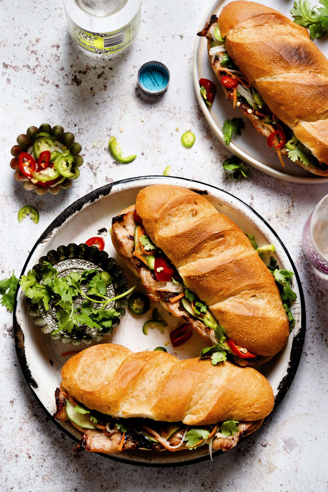
Vietnamese banh mi sandwiches are the ultimate fusion of French technique and Southeast Asian flavors — sweet-savory gri...
09 Jul 2026 09:40
Kuku Sabzi (Persian Herb Frittata)
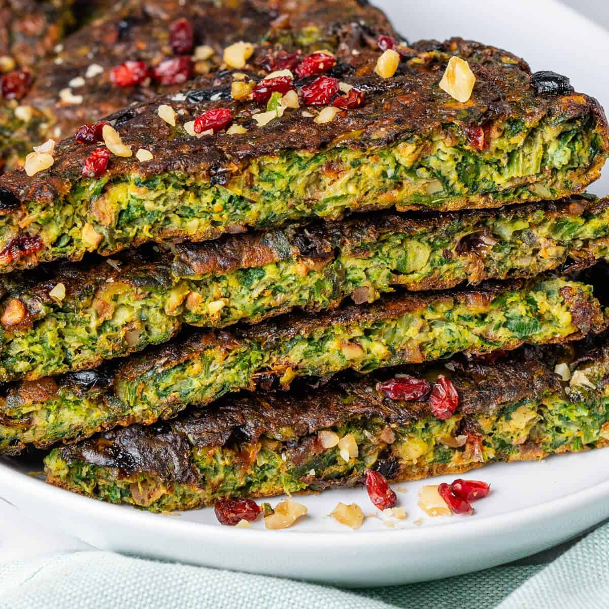
A vibrant Persian herb frittata packed with fresh dill, parsley, and cilantro — perfect for peak summer herbs. It's a ha...
08 Jul 2026 09:11
Japchae (Korean Glass Noodle Stir Fry)
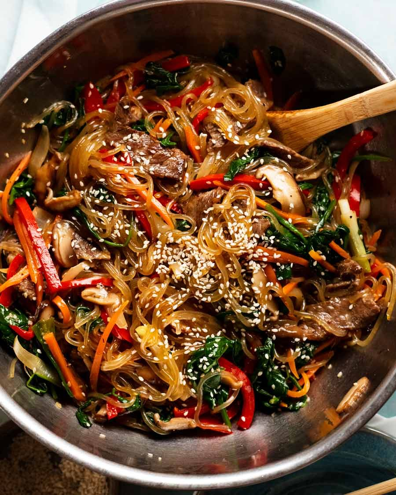
Korean glass noodles tossed with beef, colorful vegetables, and a sweet-savory sesame-soy dressing — it's sort of a stir...
07 Jul 2026 09:13
Sticky Garlic Gochujang Chicken
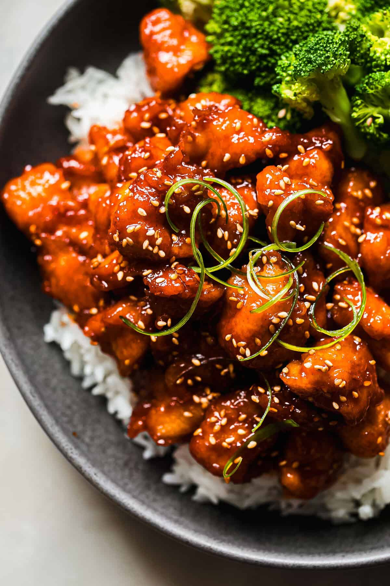
Korean-inspired crispy chicken with a sweet-spicy gochujang glaze. The velveting technique (baking soda + cornstarch) gi...
06 Jul 2026 11:45
Peach & Clotted Cream No-Churn Ice Cream
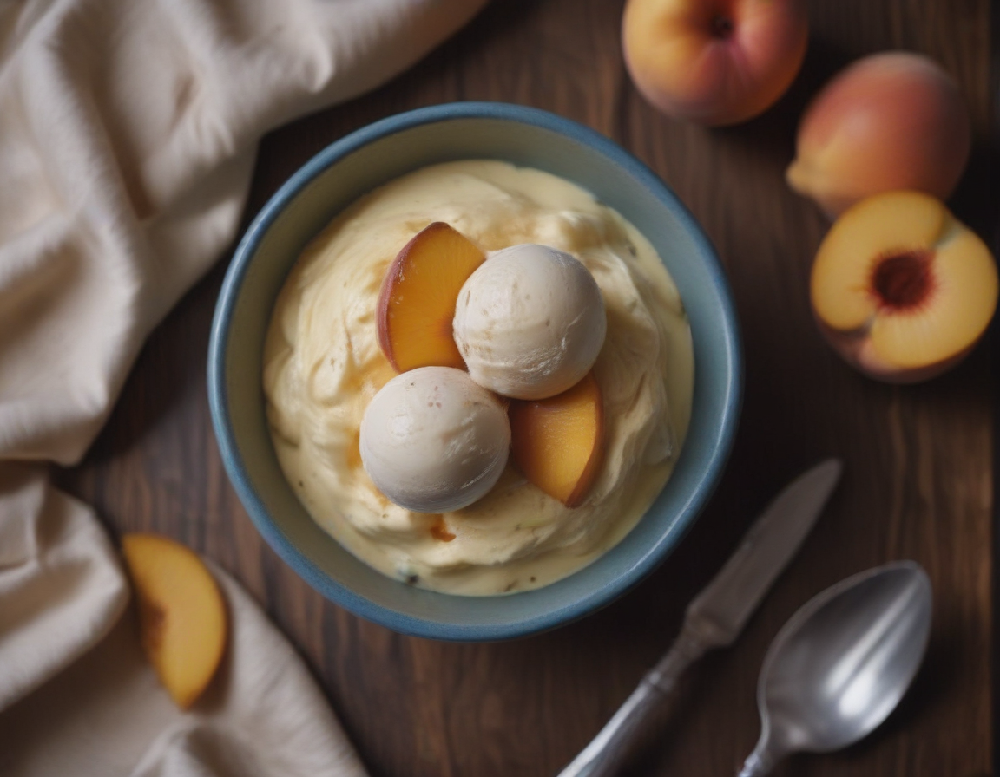
Peak peach season and clotted cream no-churn is the ultimate lazy summer dessert — no ice cream machine needed. Clotted ...
05 Jul 2026 09:06
Jjajangmyeon (Korean Black Bean Noodles)

Korean black bean noodles introduce a completely new technique — stir-frying fermented black bean paste (chunjang) to un...
04 Jul 2026 09:08
Flank Steak with Chimichurri Sauce

Summer grilling season is here and chimichurri — that vibrant, herb-packed Argentinian condiment — is the perfect way to...
03 Jul 2026 09:10
Berbere Braised Lamb Shanks (Ethiopian-Style)

Ethiopian berbere spice is a deep, complex blend of chilies, ginger, garlic, and warm spices — completely new territory ...
02 Jul 2026
Dak Galbi (Korean Spicy Chicken Stir Fry)

Korean dak galbi is a fiery one-pan stir-fry that packs gochujang-spiked chicken, sweet potato, rice cakes, and cabbage ...
01 Jul 2026 09:07
Spanish Paella with Chorizo, Chicken & Seafood
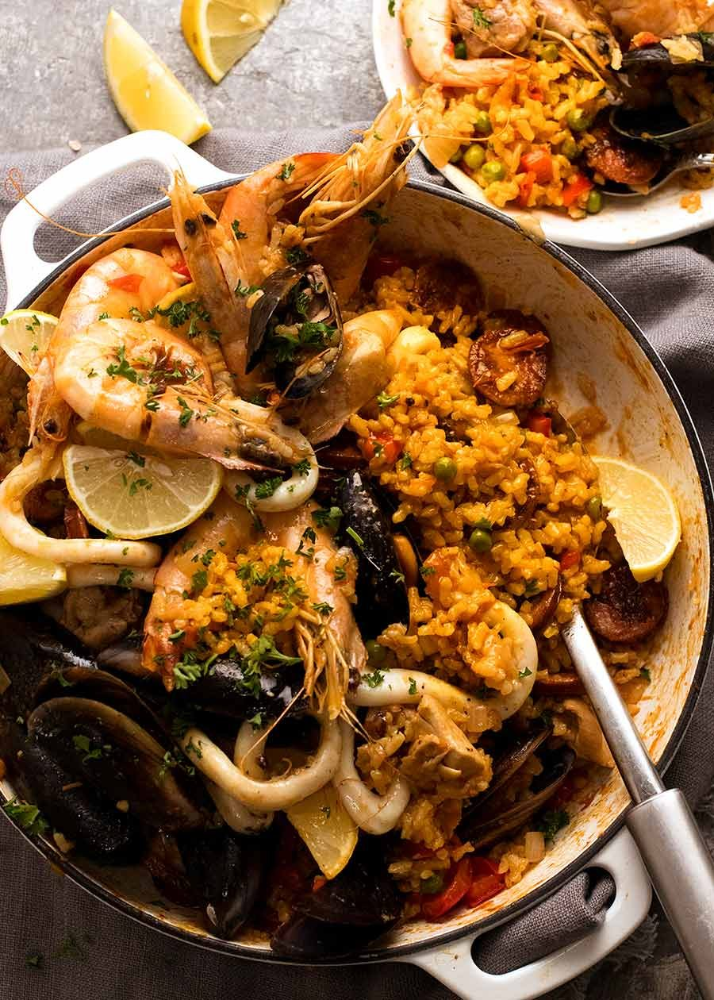
A proper one-pan Spanish classic that teaches the socarrat technique - that golden crispy rice crust at the bottom is pu...
30 Jun 2026 09:10
Nasi Goreng (Indonesian Fried Rice)
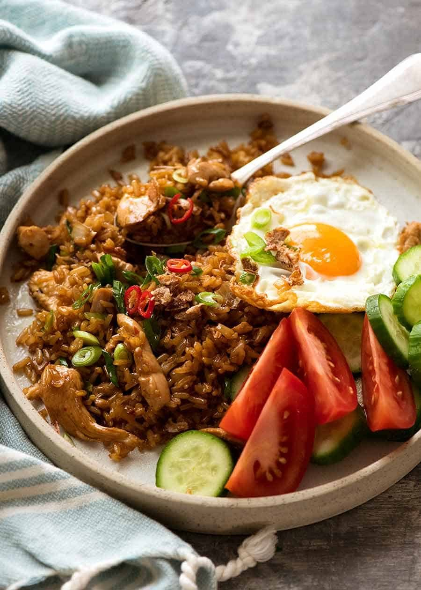
Indonesian fried rice is a quick, flavour-packed weeknight meal that's all about the caramelized colour and deep umami f...
29 Jun 2026
Fesenjan (Persian Pomegranate-Walnut Chicken Stew)
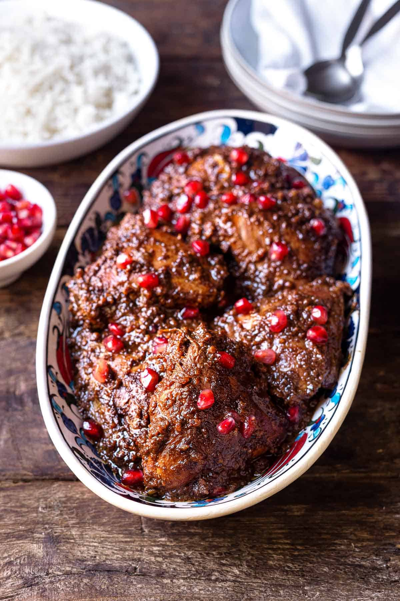
Persian cuisine is a rich, unexplored flavor world for Martin — sweet-sour pomegranate molasses, toasted walnuts, and sa...
28 Jun 2026 09:12
Korean Pork Belly Tacos with Corn Cheese
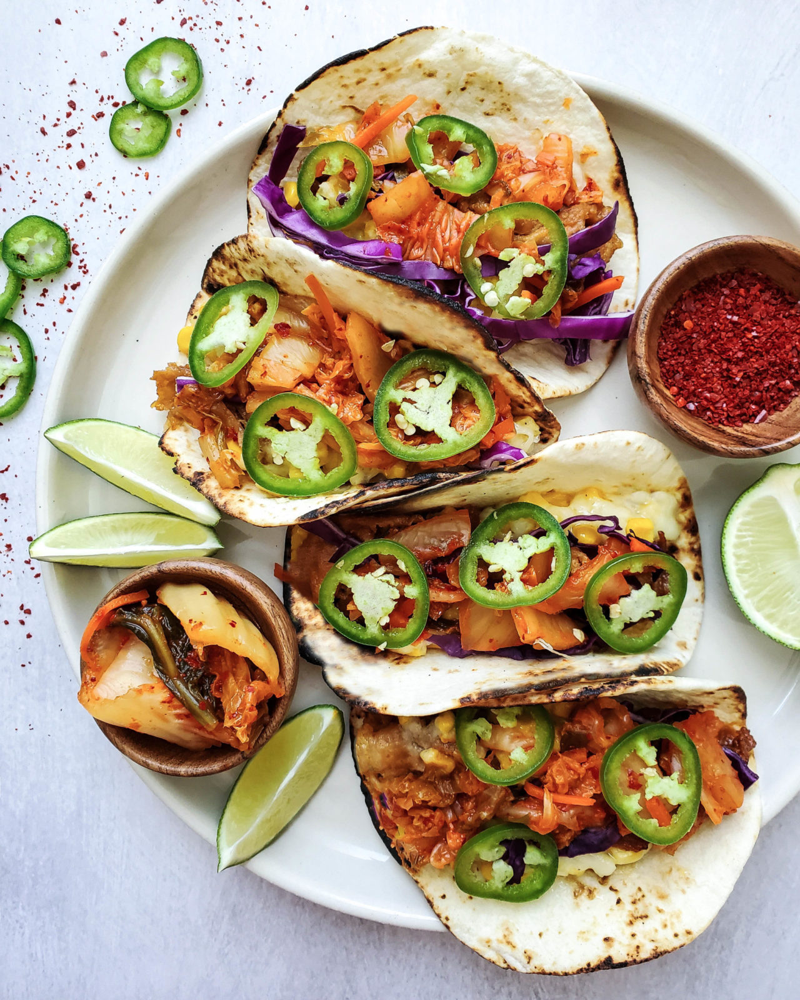
Korean-Mexican fusion at its best — crispy pork belly in soft tortillas topped with creamy Korean corn cheese and tangy ...
27 Jun 2026 09:15
Bibimbap (Korean Mixed Rice Bowl)

The crown jewel of Korean home cooking — a beautifully arranged rice bowl layered with individually seasoned vegetables,...
26 Jun 2026 09:07
Easy Homemade Ricotta Gnocchi

Ricotta gnocchi is 'Italian fast food' — pillowy dumplings made from scratch in 30 minutes with no potatoes, no resting,...
25 Jun 2026 09:06
Cold Kimchi Noodles (Bibim Guksu)

Korean bibim guksu is the ultimate summer dish — cold, spicy, tangy noodles that come together in 30 minutes. Perfect fo...
24 Jun 2026 09:08
❤ Liked
Moroccan Chicken Tagine with Apricots
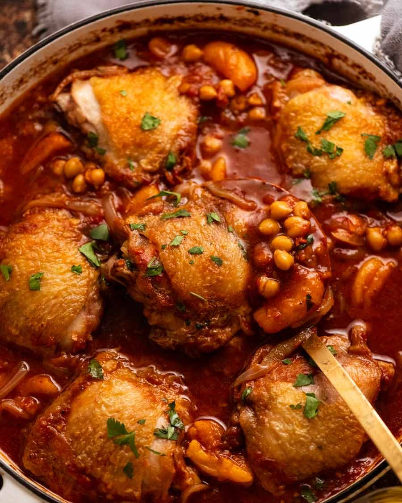
North African cooking is a flavor adventure Martin hasn't explored yet — warm spices, sweet apricots, and slow-braised c...
23 Jun 2026 09:08
Japchae (Korean Stir-Fried Glass Noodles)

A Korean classic that's perfect for summer — chewy sweet potato noodles tossed with tender beef, crisp vegetables, and a...
22 Jun 2026 09:10
Korean Fried Chicken (Dakgangjeong)
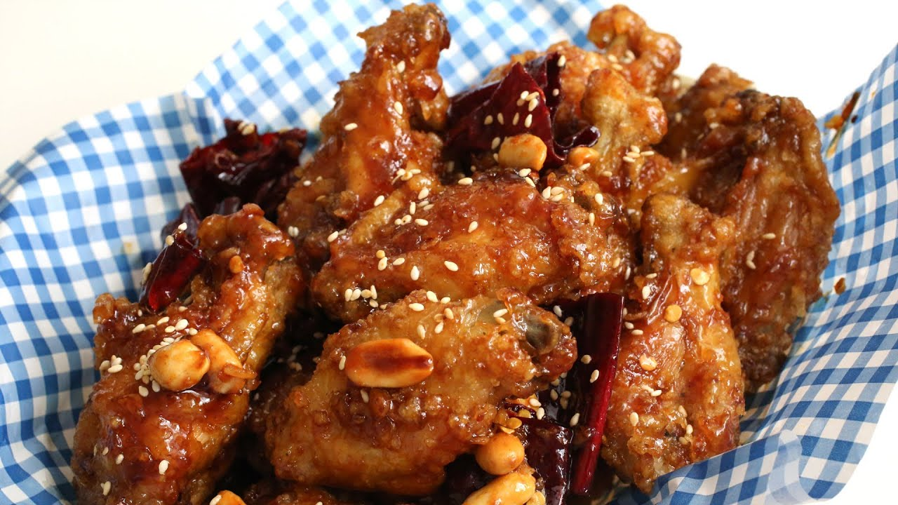
Korean fried chicken is legendary for its ultra-crispy, double-fried coating that stays crunchy even the next day. Perfe...
21 Jun 2026 09:18
Lomo Saltado (Peruvian Beef Stir Fry)

Lomo Saltado is a brilliant example of Chifa cuisine — the Chinese-Peruvian fusion born from 19th century Chinese immigr...
20 Jun 2026 09:07
Korean-Style Shakshuka with Gochujang & Kimchi
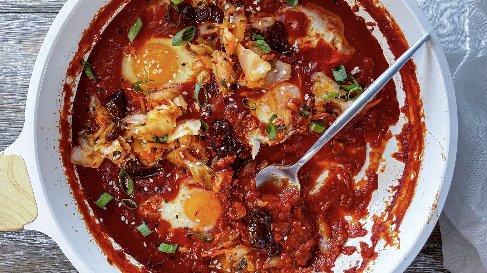
A brilliant fusion of Middle Eastern shakshuka with Korean flavors — gochujang, red miso, and kimchi create a deeply sav...
19 Jun 2026 09:06
Grilled Whole Fish with Lemongrass, Chiles and Coconut
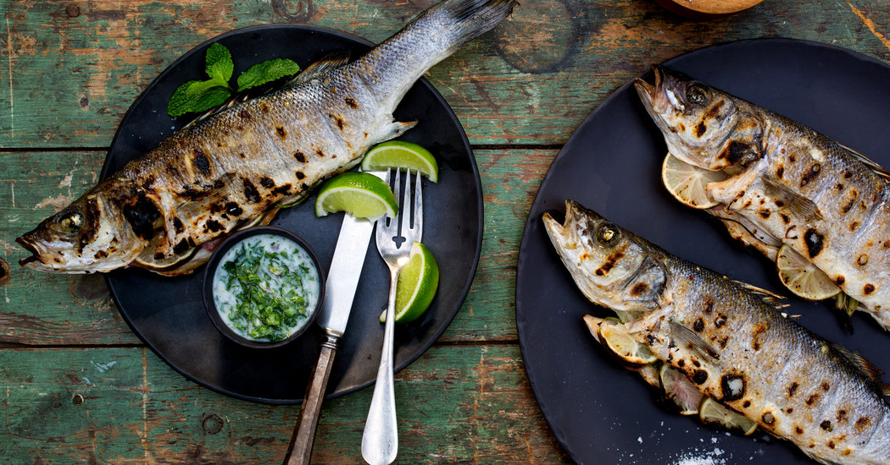
Perfect summer grilling: whole fish stuffed with fragrant lemongrass, lime, and herbs, then blasted on the grill and ser...
18 Jun 2026 09:09
Korean Braised Gochujang Chicken (Dak-bokkeum-tang)
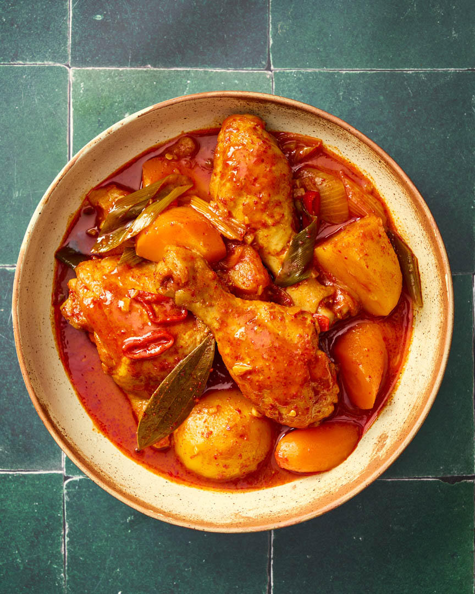
A proper Korean one-pot braised chicken stew — the chicken cooks low and slow in a gochujang-rich sauce until it practic...
17 Jun 2026 09:06
Japanese Meat and Potato Stew (Nikujaga)

A beloved Japanese home-cooking classic — beef and potatoes simmered in a sweet-savory dashi-soy broth. It's the taste o...
16 Jun 2026 09:08
Adjarian Khachapuri (Georgian Cheese Bread)
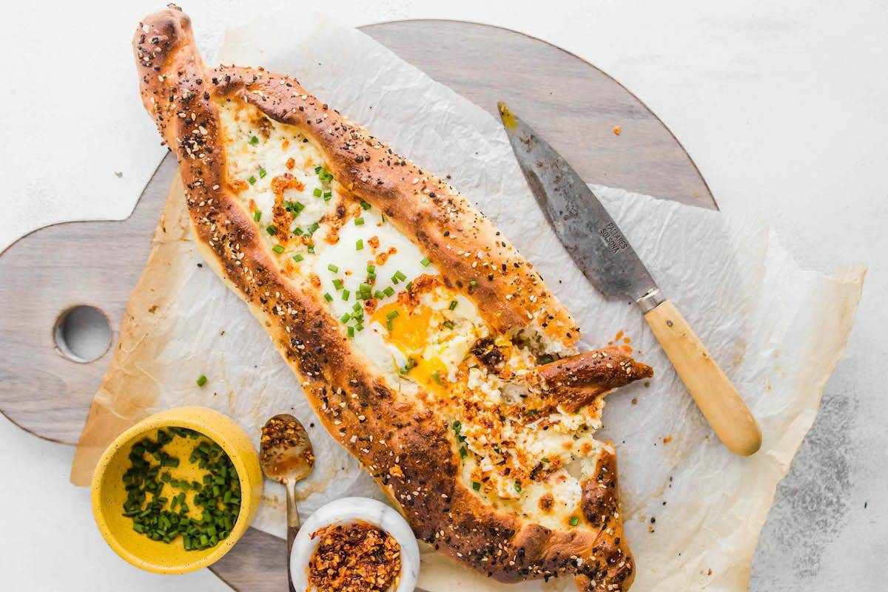
Georgia's most iconic dish — a boat-shaped bread stuffed with molten cheese, topped with a runny egg and a knob of butte...
15 Jun 2026 09:11
Moroccan Lamb Tagine with Apricots
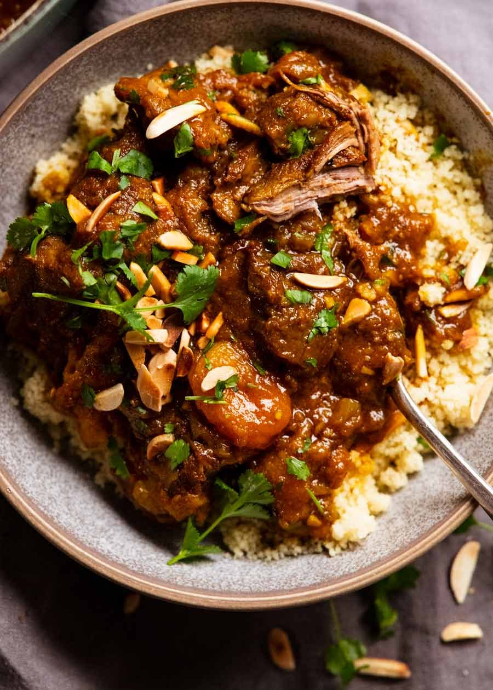
A completely new cuisine — Moroccan. This slow-cooked lamb tagine is deeply spiced with ras el hanout, studded with swee...
14 Jun 2026 09:09
Laksa Noodle Soup (Malaysian Coconut Curry Noodle Soup)
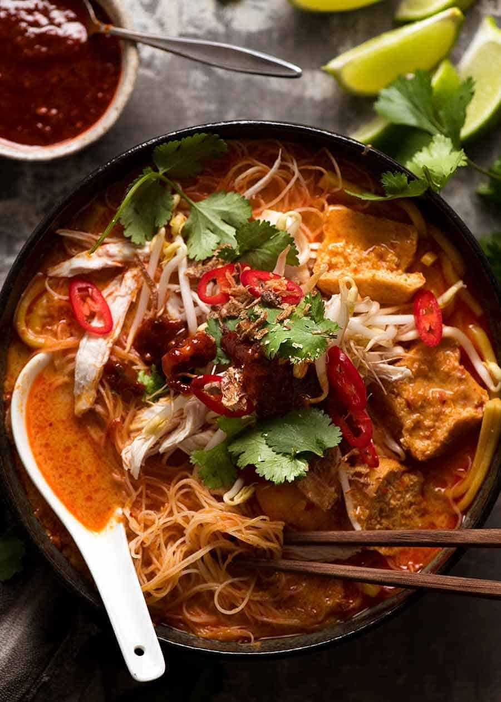
Laksa is the iconic Malaysian spicy coconut noodle soup — an incredibly rich, fragrant, complex broth loaded with classi...
13 Jun 2026
Mul Naengmyeon (Korean Cold Noodle Soup)
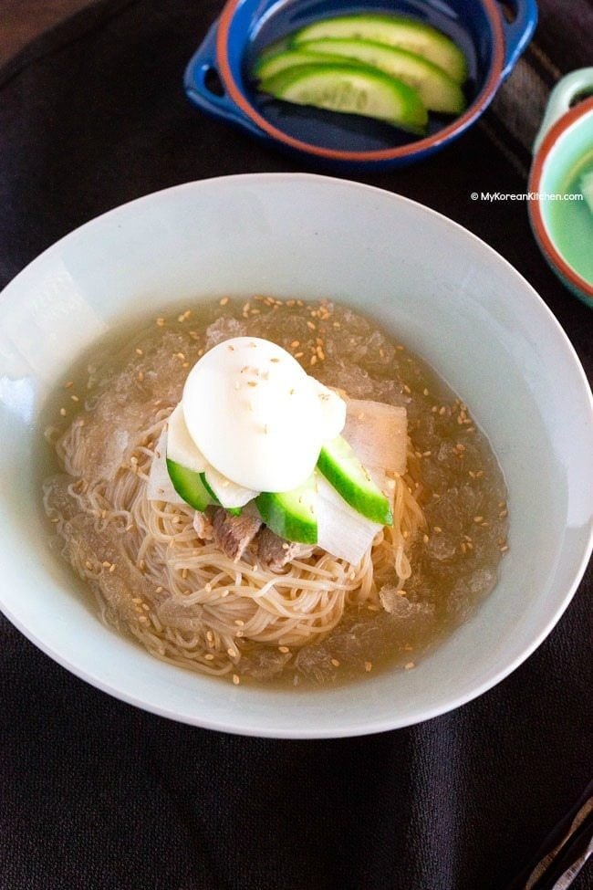
Korea's iconic summer noodle soup — icy-cold beef and radish kimchi broth with chewy buckwheat noodles, topped with slic...
12 Jun 2026 09:13
Peruvian Chicken (Pollo a la Brasa) with Aji Verde Sauce
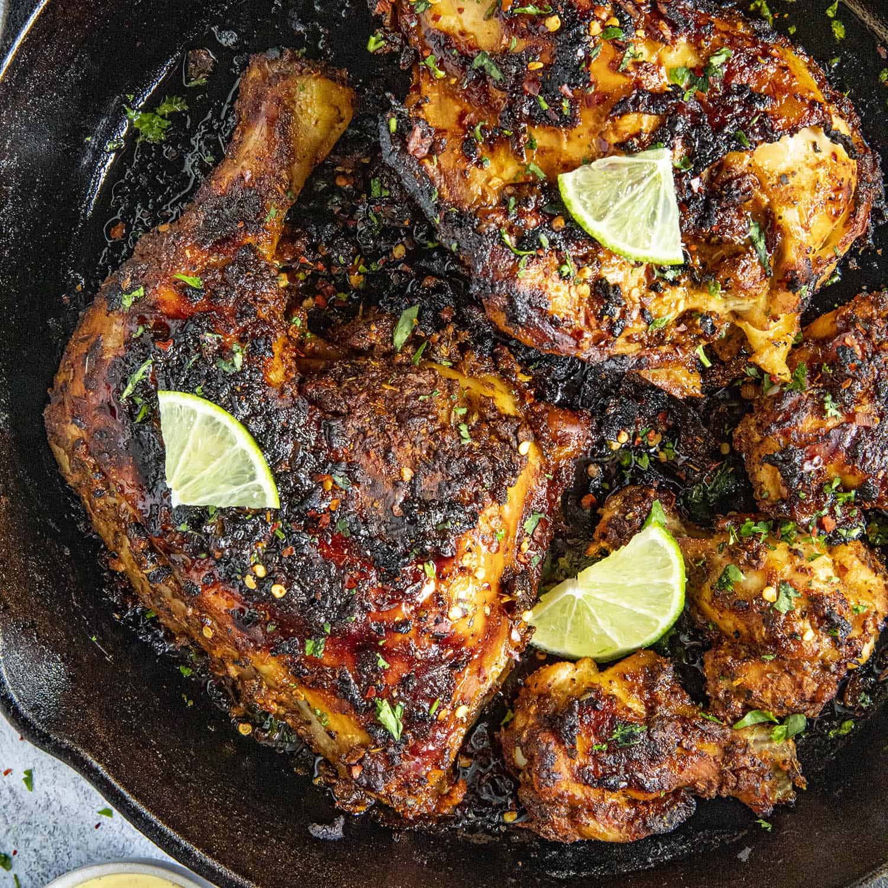
A completely new cuisine for you — Peruvian. Pollo a la Brasa is Peru's iconic roast chicken, marinated in aji amarillo ...
11 Jun 2026 09:12
Japanese Okonomiyaki (Savoury Cabbage Pancake)
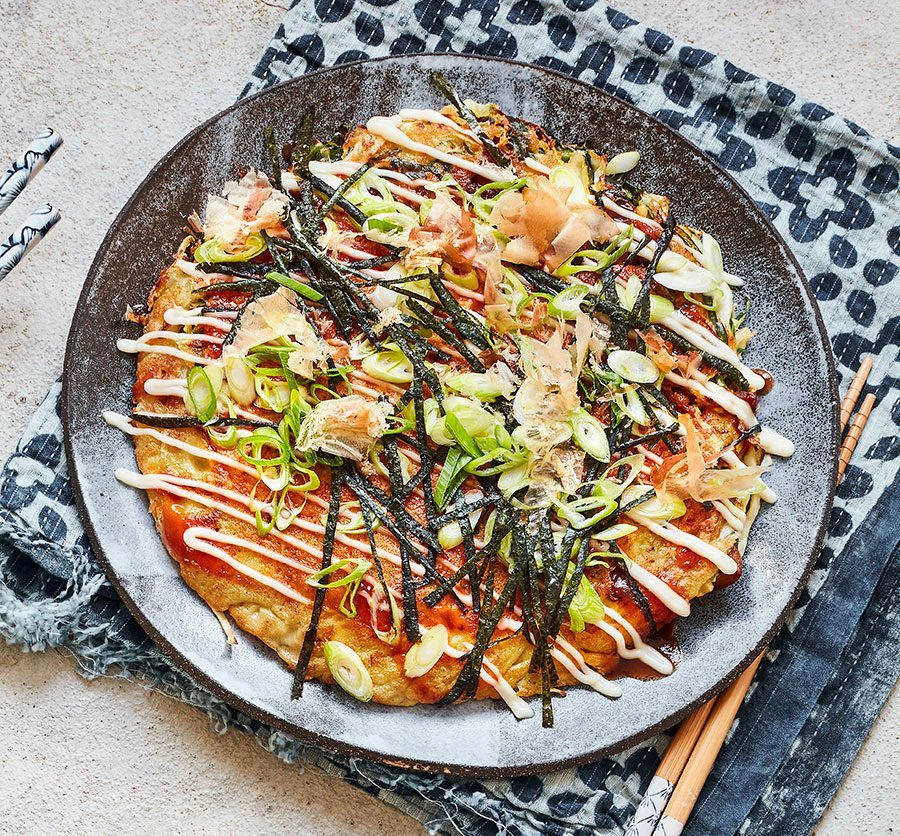
A completely new technique: Japanese savoury pancakes loaded with shredded cabbage and pork belly, topped with dancing b...
10 Jun 2026 15:45
Chorizo, Orzo & Sweetcorn Summer Stew
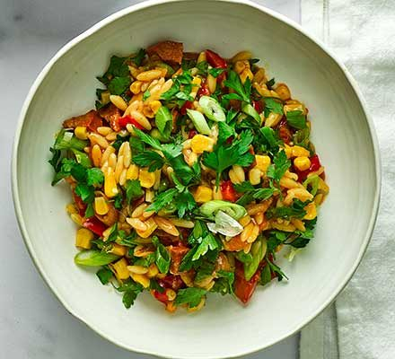
A vibrant one-pan summer stew ready in 25 minutes — chorizo, orzo, and sweetcorn simmered together with smoked paprika a...
10 Jun 2026 15:44
Vietnamese-Style Caramel Pork
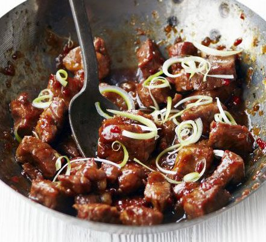
A proper step into Vietnamese cooking — sweet, sticky, and spicy pork stir-fried in a caramelised fish sauce glaze. It's...
10 Jun 2026
Korean Fried Chicken (Dakgangjeong)
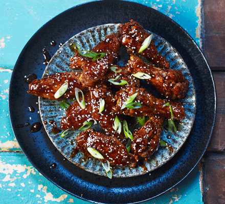
You've been exploring Korean cuisine — this is the iconic crispy, sticky, gochujang-glazed chicken that defines Korean s...
10 Jun 2026
❤ Liked
Sausage & Feta Ciabatta with Slow-Roasted Tomato Relish
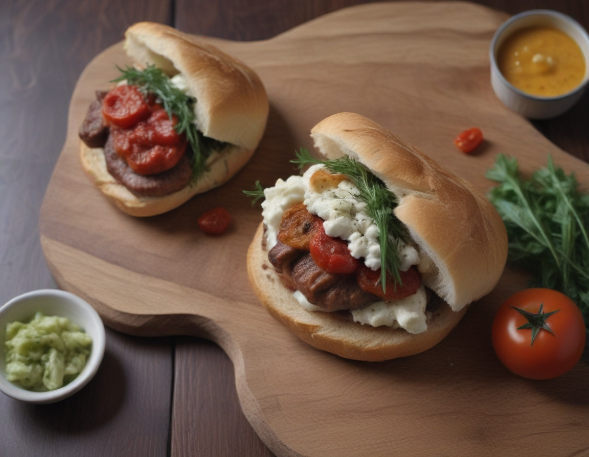
A Mediterranean-meets-British comfort roll that transforms humble English sausages into something special. Slow-roasted ...
09 Jun 2026
Korean Fried Chicken (Dakgangjeong)
You've been exploring Korean cuisine, and this is the crown jewel — double-fried wings in a sticky gochujang glaze. The ...
08 Jun 2026 09:09
Bibim Guksu (Korean Cold Spicy Noodle Salad)
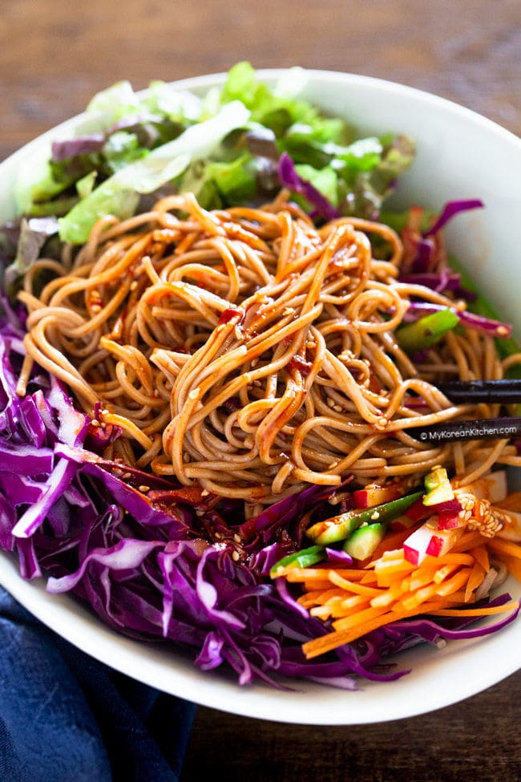
Bibim guksu is Korea's go-to summer noodle dish — cold, spicy, tangy buckwheat noodles tossed with crunchy vegetables in...
07 Jun 2026
Harissa Chicken Traybake

A one-pan Mediterranean traybake that's almost entirely hands-off — 10 minutes of prep, then the oven does the work. Har...
06 Jun 2026 19:26
Seared Salmon with Avocado-Lime Salsa, Warm Spinach & Chilli Beans
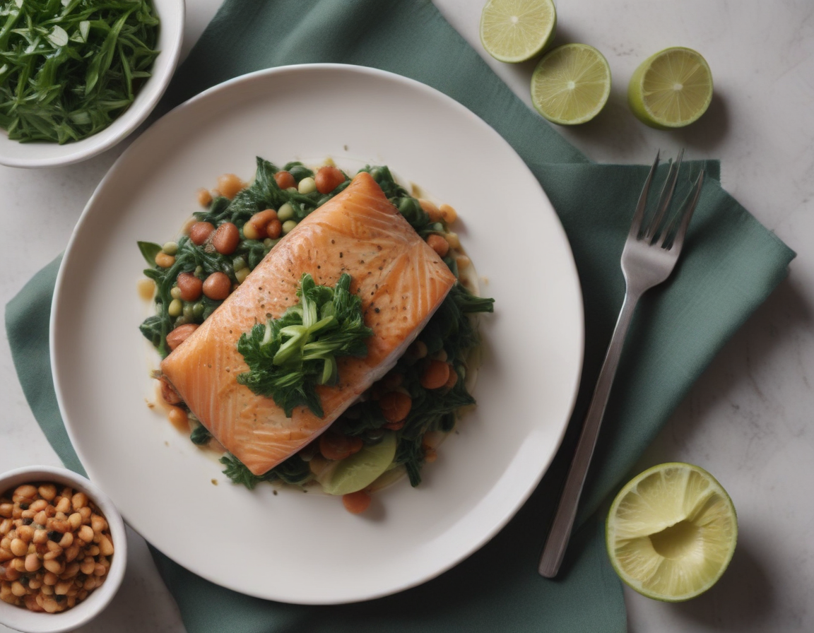
Vietnamese-inspired plate that's bright, fresh, and layered with gentle heat. Uses seasonal avocado and radish with cris...
06 Jun 2026 16:34
❤ Liked
Pizza Dipping Sauces Collection

A great dipping sauce elevates homemade pizza from nice to proper thing. These range from classic to adventurous — all q...
06 Jun 2026 14:47
❤ Liked
Roasted Cherry Tomato Basil Pasta
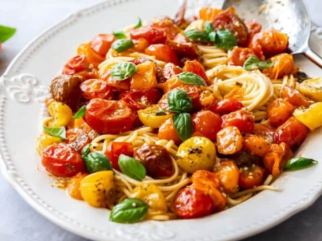
When you've got genuinely good cherry tomatoes, roasting them is the move. The oven concentrates their sweetness, slight...
05 Jun 2026 18:29
❤ Liked
Miso Butter Ramen with Soft-Boiled Egg
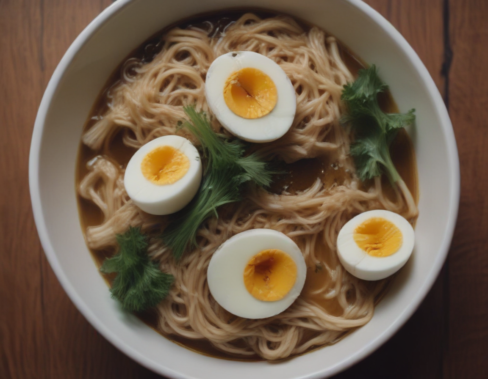
White miso and brown butter create an incredibly rich, umami-packed broth that's surprisingly quick. The technique of br...
05 Jun 2026
❤ Liked
Grilled Peach and Burrata Salad
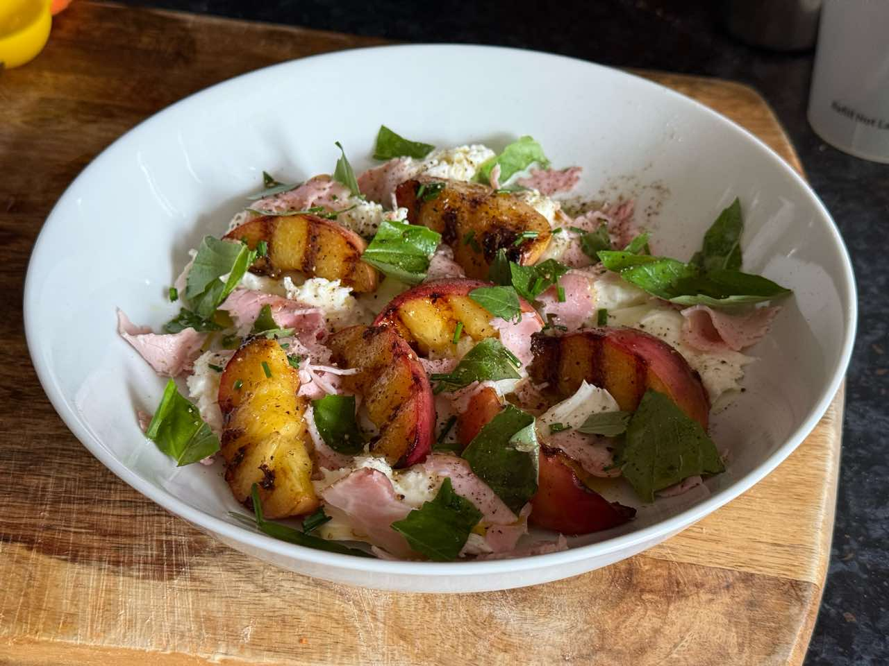
Grilled peaches bring caramelised sweetness to a salad that balances rich burrata, salty prosciutto and bright herbs.
04 Jun 2026 20:00
❤ Liked
Creamy Corn Miso Pasta
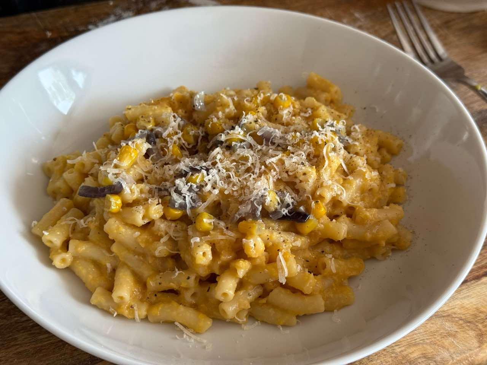
Summer corn at its peak, turned into a silky pasta sauce with white miso and a touch of gochugaru heat. The corn milk sc...